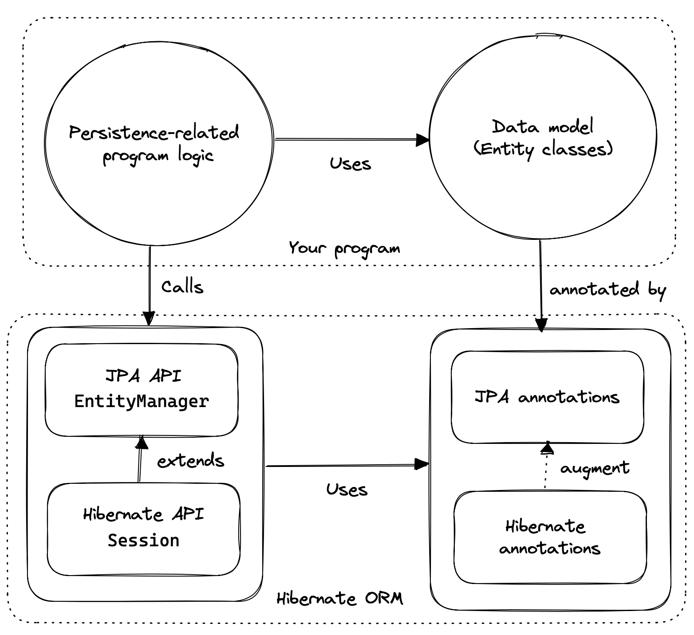
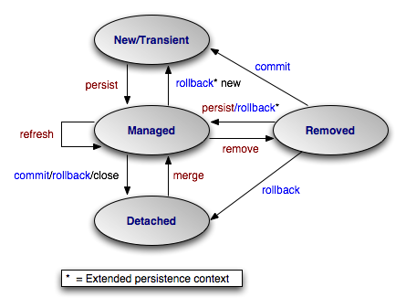

sequenceDiagram
participant U1 as Utilisateur 1
participant U2 as Utilisateur 2
participant JPA as EntityManager
participant DB as Base de données
Note over DB: Product(id=1, stock=10, version=0)
rect rgb(220, 240, 255)
Note over U1,DB: Phase de lecture
U1->>JPA: find(Product.class, 1)
JPA->>DB: SELECT * FROM products WHERE id=1
DB-->>JPA: Product(stock=10, version=0)
JPA-->>U1: Product en mémoire (v=0)
U2->>JPA: find(Product.class, 1)
JPA->>DB: SELECT * FROM products WHERE id=1
DB-->>JPA: Product(stock=10, version=0)
JPA-->>U2: Product en mémoire (v=0)
end
rect rgb(220, 255, 220)
Note over U1,DB: Utilisateur 1 commit en premier
U1->>U1: setStock(8)
U1->>JPA: flush()
JPA->>DB: UPDATE products SET stock=8, version=1<br/>WHERE id=1 AND version=0
DB-->>JPA: ✅ 1 ligne modifiée
JPA-->>U1: Succès (version=1)
Note over DB: Product(id=1, stock=8, version=1)
end
rect rgb(255, 220, 220)
Note over U2,DB: Utilisateur 2 tente de commit
U2->>U2: setStock(7)
U2->>JPA: flush()
JPA->>DB: UPDATE products SET stock=7, version=1<br/>WHERE id=1 AND version=0
DB-->>JPA: ❌ 0 ligne modifiée<br/>(version ne correspond pas)
JPA-->>U2: ❌ OptimisticLockException
Note over U2: Conflit détecté!<br/>Version attendue: 0<br/>Version actuelle: 1
end
rect rgb(255, 240, 200)
Note over U2,DB: Utilisateur 2 réessaye
U2->>JPA: refresh(product)
JPA->>DB: SELECT * FROM products WHERE id=1
DB-->>JPA: Product(stock=8, version=1)
JPA-->>U2: Product mis à jour (v=1)
U2->>U2: setStock(6)
U2->>JPA: flush()
JPA->>DB: UPDATE products SET stock=6, version=2<br/>WHERE id=1 AND version=1
DB-->>JPA: ✅ 1 ligne modifiée
JPA-->>U2: Succès (version=2)
Note over DB: Product(id=1, stock=6, version=2)
end
CM4 - Persistance des données
1 Références
2 Introduction
Dans le cours ALSI54, nous avions vu comment utiliser JDBC pour exécuter des requêtes SQL.
Cette approche a ses limites :
- copie manuelle attributs <-> colonnes
- erreurs de syntaxe SQL détectées à l’exécution
- code SQL parfois non portable entre SGBD
- synchronisation de la structure en BDD et des classes
- “impedance mismatch” :
- graphes d’objets vs tables et relations
- pas d’héritage en relationnel
- les développeurs doivent maîtriser SQL
Idéalement, on souhaiterait manipuler uniquement des objets. C’est le rôle d’un outil ORM (Object Relational Mapping).
3 Jakarta Persistence (JPA)
Jakarta Persistence (anciennement JPA) est une spécification.
- Elle propose une API implémentée par plusieurs fournisseurs d’ORM.
- packages
jakarta.persistence.*
- packages
- ORM les plus connus :
- Hibernate : le plus populaire
- EclipseLink : implémentation de référence

3.1 Entity
Une entité représente un objet du domaine business qui doit être persisté. Typiquement :
- 1 Entité <-> 1 Table
- 1 attribut <-> 1 colonne
Une entité est déclarée avec @Entity. Elle doit respecter quelques contraintes :
- classe non final, aucune méthode final, aucun attribut persistant final
- l’ORM utilise des objets proxy qui redéfinissent les accesseurs
- posséder un constructeur par défaut
- les
records ne sont en général pas adaptés : les entités sont intrinsèquement mutables- ils peuvent être utilisés pour les résultats de requêtes en lecture seule
Contraintes sur les attributs persistants :
- ils ne doivent pas être public
- ils doivent être d’un certain type (voir Persistent fields)
Exemple :
import jakarta.persistence.*;
@Entity
@Table(name = "users")
public class User {
@Id
@GeneratedValue(strategy = GenerationType.IDENTITY)
private Long id;
@Column(name = "username", nullable = false, unique = true)
private String username;
@Column(name = "email", nullable = false)
private String email;
// @Column n'est pas obligatoire. La colonne sera nommée first_name
private String firstName;
private String name;
// Getters and Setters (facultatifs)
}
Note
Les annotations peuvent être sur les attributs ou sur les accesseurs (get/set). Mais en règle générale, il est plus pratique d’annoter les attributs directement.
3.2 EntityManager
Les objets Entity sont gérées par un EntityManager. Cette API permet de :
- créer (
persist), modifier (merge) et supprimer (remove) des entités.- Les opérations sont traduites en instructions SQL
INSERT,UPDATE,DELETE
- Les opérations sont traduites en instructions SQL
- trouver des entités par leur clé primaire, en utilisant un
SELECT - exécuter des recherches, en utilisant des requêtes
SELECT
La classe EntityManager n’est pas thread-safe. On l’utilise de la manière suivante :
- L’obtenir depuis une
EntityManagerFactory - Une fois obtenu, on initie une transaction.
- Travailler avec les entités
- Valider (
commit), ou annuler (rollback) la transaction.
public class OrderService {
// avec Jakarta ou Spring, la factory sera injectée
private EntityManagerFactory emf;
public void createOrder(Order order, List<Product> products) {
EntityManager em = emf.createEntityManager();
EntityTransaction tx = null;
try {
tx = em.getTransaction();
tx.begin(); // Démarre la transaction
// Plusieurs opérations dans UNE transaction
em.persist(order);
for (Product p : products) {
p.setStock(p.getStock() - 1);
em.merge(p);
OrderItem item = new OrderItem(order, p);
em.persist(item);
}
// valide les modifications. Les ordres SQL sont envoyés à la BDD
tx.commit();
} catch(Exception e) {
// s'il y a un problème, annule les modifications et relance l'exception
if (tx != null && tx.isActive())
tx.rollback();
throw e;
}
finally {
em.close();
}
}
}3.3 Cycle de vie d’une entité
Un objet annoté @Entity possède un état. Il est modifié par les appels à l’EntityManager.
- un nouvel objet qui n’a jamais obtenu d’ID est New
- au sein d’une transaction, un objet lu depuis la base ou persisté est Managed.
- les appels à
commit(),rollback()ouflush()déclenchent les requêtes SQL INSERT/UPDATE/DELETE - un objet qui a été persisté, mais qui n’est plus dans une transaction est Detached
- un objet supprimé est Removed. Il sera effectivement supprimé de la base après un
commit()

3.4 Relations
Une relation entre deux tables se traduit en attributs annotés avec l’une de ces annotations : @OneToMany, @OneToOne, @ManyToOne, @ManyToMany.
Entre deux entités A et B, on peut avoir des relations :
- uni-directionnelles :
Apossède un attribut de typeB(ouList<B>). - bi-directionnelles :
Apossède un attribut de typeB(ouList<B>), etBpossède un attribut de typeA(ouList<A>).- on aura
@OneToManydans un sens, et@ManyToOnedans l’autre sens. - ou bien
@ManyToManydans les deux sens
- on aura
Warning
Il faut éviter les associations uni-directionnelles @OneToMany. Elles posent des problèmes de performance en cas de suppression d’un élément. Jakarta persistence va recréer toutes les associations à chaque suppression.
import jakarta.persistence.*;
import java.util.ArrayList;
import java.util.List;
@Entity
public class Department {
@Id
@GeneratedValue(strategy = GenerationType.IDENTITY)
private Long id;
private String name;
// mappedBy designe l'attribut Employee.department
@OneToMany(mappedBy = "department", cascade = CascadeType.ALL)
private List<Employee> employees = new ArrayList<>();
// Getters/Setters
public Long getId() { return id; }
public String getName() { return name; }
public void setName(String name) { this.name = name; }
public List<Employee> getEmployees() { return employees; }
}import jakarta.persistence.*;
@Entity
public class Employee {
@Id
@GeneratedValue(strategy = GenerationType.IDENTITY)
private Long id;
private String name;
@ManyToOne(fetch = FetchType.LAZY)
@JoinColumn(name = "department_id")
private Department department;
// Getters/Setters
public Long getId() { return id; }
public String getName() { return name; }
public void setName(String name) { this.name = name; }
public Department getDepartment() { return department; }
public void setDepartment(Department department) { this.department = department; }
}
Note
Le
FetchTypedétermine quand les objets sont lus depuis la BDD. Par défaut, les relationsOneToManysontLAZY. Cela signifie que les objets référencés sont lus à la demande.L’option
cascadedétermine quel traitement effectuer sur l’entité associée lorsque l’entité mère change d’état. Voir Cascade operations
3.5 Requêtes
Il existe deux APIs pour rechercher des entités :
- JPQL est un langage ressemblant à SQL, exprimé sous forme de chaîne de caractères
- plus concis et lisible, mais peut provoquer des erreurs au runtime
- c’est le plus utilisé en pratique
- la Criteria API est type-safe. Elle utilise des appels de méthodes Java.
- meilleure performance (pas de parsing), plus sûr, mieux adapté pour des requêtes dynamiques
/* Trouver tous les employés d'un département spécifique */
// JPQL
String jpql = "SELECT e FROM Employee e WHERE e.department.name = :deptName";
List<Employee> employees = entityManager.createQuery(jpql, Employee.class)
.setParameter("deptName", "IT")
.getResultList();
// Criteria API
// Les classes Employee_ et Department_ sont des classes de Metamodèle générées automatiquement
CriteriaBuilder cb = entityManager.getCriteriaBuilder();
CriteriaQuery<Employee> cq = cb.createQuery(Employee.class);
Root<Employee> emp = cq.from(Employee.class);
cq.select(emp).where(cb.equal(emp.get(Employee_.department).get(Department_.name), "IT"));3.6 Le problème N+1
Le problème N+1 se produit lorsqu’on oublie de “fetch” une association que l’on utilise par la suite.
Par exemple, dans le code suivant :
String jpql = "SELECT e FROM Employee e WHERE e.name LIKE :eName";
List<Employee> employees = entityManager.createQuery(jpql, Employee.class)
.setParameter("eName", "John%")
.getResultList();
for (Employee employee : employees) {
LOGGER.info("The employee department is '{}'", employee.getDepartment().getName());
}Le moteur ORM devra exécuter :
- une requête pour trouver les employés nommés John
- une requête par employé pour trouver le département associé
Cela peut produire des problèmes de performances insidieux, qui ne deviendront visibles que lorsque la base de données sera assez large. Un grand nombre de requêtes superflues vont être générées par le moteur d’ORM.
Dans notre exemple, pour résoudre ce problème, on peut soit :
- modifier
@ManyToOne(fetch = FetchType.EAGER) - corriger la requête pour forcer le “fetch”
String jpql = "SELECT e FROM Employee e JOIN FETCH e.department d WHERE e.name LIKE :eName";
3.7 Caches
3.7.1 Premier niveau
Lorsqu’on lit des entités avec EntityManager, les objets retournés sont conservés dans un cache de premier niveau.
- il est détruit lorsqu’on appelle
em.close() - il existe par défaut et n’est pas configurable
// Première lecture : requête SQL vers la BD
User user1 = entityManager.find(User.class, 1L);
// Deuxième lecture : retour depuis le cache L1, pas de SQL
User user2 = entityManager.find(User.class, 1L);
// user1 == user2 (même instance)3.7.2 Deuxième niveau
Avec Hibernate, on peut configurer un cache de second niveau, qui permet de conserver en mémoire des objets provenant de transactions différentes. Il est optionnel, et est commun à tous les EntityManager créés par une même EntityManagerFactory.
- L’annotation
@Cachepermet de contrôller quelles entités sont cachées - On peut configurer quel fournisseur de cache utiliser, sa taille, sa politique d’éviction
- Dans le cas d’applications distribuées (plusieurs JVM), il peut être nécéssaire de configurer un cache distribué comme Redis.
Voir Hibernate Second Level Cache
// Première lecture : requête SQL vers la BD
User user1 = entityManager.find(User.class, 1L);
// Deuxième lecture : retour depuis le cache L1, pas de SQL
User user2 = entityManager.find(User.class, 1L);
// user1 == user2 (même instance)3.8 Optimistic Locking
Lorsque plusieurs utilisateurs peuvent modifier une entité, on peut se retrouver avec des conflits :
- U1 lit une entité
- U2 lit la mête entité
- U1 modifie
- U2 modifie l’entité et écrase les modifications faites par U1
Pour résoudre ce problème, on peut utiliser des “lock” en base de données pour bloquer toute modification sur une ligne. Mais cette technique pose des problèmes de performances.
Lorsque les conflits sont rares, une technique efficace est l’optimistic locking. Le principe est le suivant :
- ajouter un attribut
@Version, qui sera incrémenté après chaque mise à jour. - lorsqu’on effectue une mise à jour, l’ORM exécutera une requête
UPDATE ... WHERE version = :versionLue - si aucune ligne n’a été mise à jour, cela signifie que la version a été incrémentée depuis la dernière lecture
- =>
OptimisticLockingException
- =>
@Entity
@Table(name = "products")
public class Product {
@Id
@GeneratedValue(strategy = GenerationType.IDENTITY)
private Long id;
private String name;
private Integer stock;
// @Version active l'optimistic locking
// JPA incrémente automatiquement cette valeur à chaque mise à jour
@Version
private Long version;
// constructeurs, getters, setters, ...3.9 Testing
Pour tester notre code de persistance, nous avons besoin :
- d’une base de données
- quelques test utiliserons le SGBD cible
- mais la majorité des tests utiliserons une base in-memory, comme H2
- d’un schéma correspondant à nos entités
- configurer jakarta persistance pour recréer le schéma automatiquement
- d’un ensemble de données de test, représentant un état de la base bien défini
Cependant, recréer la base pour chaque test est trop coûteux en temps. En pratique, la base sera initialisée une seule fois au début. Entre chaque test, nous pouvons utiliser deux stratégies :
- utiliser
TRUNCATEentre chaque test - utiliser les transactions, et faire un
rollbackà la fin du test
Important
Chaque test doit être indépendant. Il ne faut pas créer des classes de tests où les tests doivent s’exécuter dans un ordre particulier. Cela engendre des problèmes de maintenance et de faux négatifs/positifs.
4 Autres technologies de persistance
Utiliser un ORM a des inconvénients :
- le développeur pert le contrôle sur les requêtes effectivement envoyées au SGBD
- les problèmes de performances peuvent être difficile à résoudre
- le schéma de BDD peut être imposé ou préexistant :
- plusieurs applications utilisent la base
- développement d’un backend sur une BDD existante
- le schéma est imposé par und’autres équipes
- dans ces cas, le mapping peut devenir trop complexe ou trop coûteux à mettre à jour.
4.1 Native Query
Il est possible d’utiliser Jakarta Persistance pour une partie des requêtes, et des requêtes SQL pour certaines requêtes critiques. On utilisera la méthode createNativeQuery dans EntityManager.
public List<User> findUsersByStatus(String status) {
String sql = "SELECT * FROM users WHERE status = :status";
Query query = entityManager.createNativeQuery(sql, User.class);
query.setParameter("status", status);
return query.getResultList();
}On peut aussi utiliser l’annotation @NamedNativeQuery si l’on souhaite utiliser une requête nommée :
@Entity
@Table(name = "users")
@NamedNativeQuery(
name = "User.findActiveUsers",
query = "SELECT * FROM users WHERE active = true",
resultClass = User.class
)
public class User {
@Id
@GeneratedValue(strategy = GenerationType.IDENTITY)
private Long id;
private String name;
private boolean active;
// getters et setters
}
// Utilisation
public List<User> findActiveUsers() {
return entityManager
.createNamedQuery("User.findActiveUsers", User.class)
.getResultList();
}4.2 Jdbc
On peut également obtenir directement l’objet JDBC Connection et travailler avec, mais c’est assez fastidieux.
Les frameworks d’entreprise permettent d’utiliser Jdbc avec une couche de mapping légère pour transformer un ResultSet en liste d’objets. Pour Spring, voir JdbcTemplate.
4.3 jOOQ
jOOQ permet d’écrire des requêtes en utilisant une API Java type-safe. Cela ressemble un peu à la Criteria API, mais pour construire des requêtes SQL.
// Configuration de jOOQ
DSLContext create = DSL.using(connection, SQLDialect.POSTGRES);
// Requête typée et fluide
Result<Record3<String, String, Integer>> result =
create.select(AUTHOR.FIRST_NAME, AUTHOR.LAST_NAME, count())
.from(AUTHOR)
.join(BOOK).on(AUTHOR.ID.eq(BOOK.AUTHOR_ID))
.where(BOOK.PUBLISHED_YEAR.gt(2020))
.groupBy(AUTHOR.ID)
.orderBy(count().desc())
.fetch();
// Utilisation des résultats
for (Record3<String, String, Integer> r : result) {
System.out.println(r.value1() + " " + r.value2() +
" : " + r.value3() + " livres");
}jOOQ se connecte à la base pour lire sa structure et générer les classes AUTHOR, BOOK, … ainsi que des POJOs pour mapper les résultats.